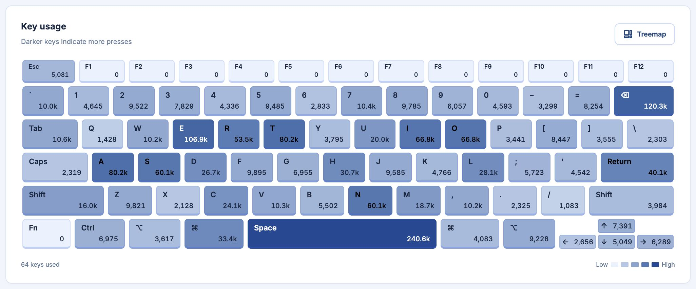
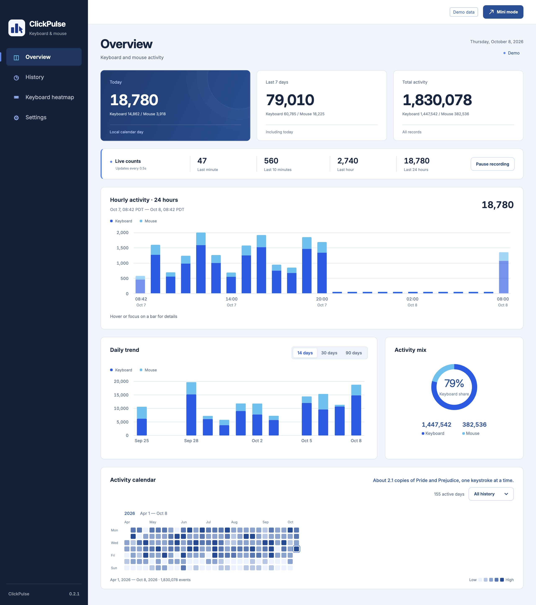
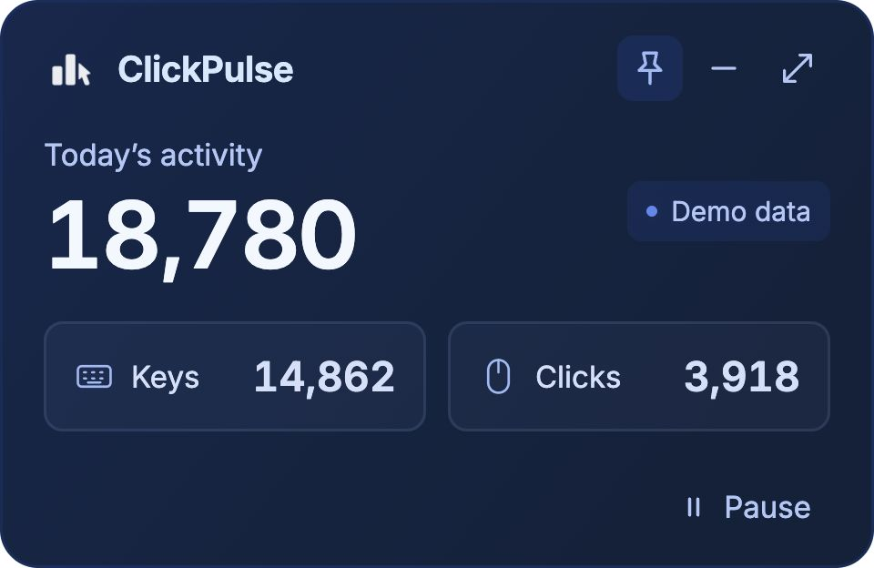

最常按下的键，一眼看清
键盘热力图把长期习惯变成直观颜色。查看当天，也可以回到历史中的任意一天。

正在获取最新版本
ClickPulse 在本地记录键盘和鼠标活动，把重复的按键与点击，变成趋势、热力图和可以回看的工作节奏。
无需账号 · 无遥测 · 数据默认只留在你的电脑

ClickPulse 不记录你输入了什么，也不知道你打开了哪个应用。它只保存聚合后的次数，帮助你理解自己的节奏。
键盘热力图把长期习惯变成直观颜色。查看当天，也可以回到历史中的任意一天。

从小时曲线到全年日历，找到高强度工作和休息的真实分布。

把今天的计数留在桌面一角，需要时看一眼，不打断正在做的事。
统计历史保存在你选择的本地目录，可备份、迁移或合并。
概览、历史、热力图、矩形树图和 Mini 模式，各自回答不同问题。
支持主题、语言、时区、紧凑窗口和开机启动。
选择你的系统。官网会在正式 Release 发布后自动切换到最新稳定版。
Windows 10 / 11 · x64
macOS 12+
Ubuntu 22.04 / 24.04
首次打开提示： Windows 和 macOS 版本暂未购买代码签名证书，系统可能显示安全提醒。安装包可以通过 SHA256 和公开源码校验。 查看安装说明
ClickPulse 的正常统计完全离线。它不会保存按键内容、具体字符、应用名称、鼠标位置或浏览记录。
下载后即可使用，不需要邮箱或登录。
没有广告 SDK，也没有隐藏的行为分析。
只有你主动加入时，才上传每日键盘和鼠标总次数。
ClickPulse-Social 是 endNone/ClickPulse 的独立二次开发版本，由罗洋洋维护，继续采用 GPL-3.0-or-later 许可证。你可以审查源码、构建自己的版本，也可以参与改进。